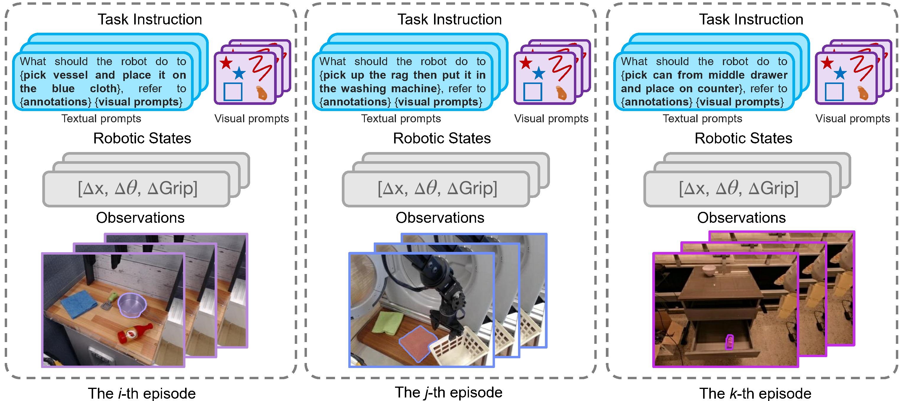
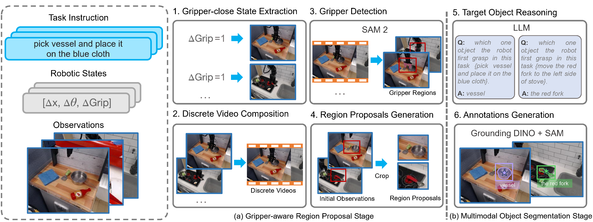

Overview
PixelVLA extends a VLA backbone with pixel-aware grounding, prompt-aware encoding, and a continuous action decoder, then trains it with a two-stage visuomotor instruction-tuning recipe.
The core idea is simple: instead of asking a robot to infer everything from a whole image and a sentence, PixelVLA lets the model use pixel masks and visual prompts such as points, lines, regions, and masks. This makes spatial grounding more precise and makes human-robot interaction more flexible.
To make this possible at scale, the paper introduces Pixel-160K, a pixel-annotated visuomotor instruction-tuning dataset generated with a two-stage automated annotation pipeline.
Spatial precision
Fine-grained pixel cues improve object-level grounding in cluttered scenes.
Better interaction
Users can indicate targets with masks, points, regions, and lines, not only text.
Stronger transfer
The gains hold across Google Robot, WidowX, and LIBERO benchmarks.
Method
PixelVLA adds three key modules on top of a vision-language backbone: a visual prompt-aware encoder, a multiscale pixel-aware encoder, and a continuous action decoder for 7D robot control.

Visual Prompt-aware Encoder
Encodes points, lines, regions, and masks into prompt-aware embeddings while preserving geometry.
Multiscale Pixel-aware Encoder
Injects fine-grained pixel information from multilevel visual features into the token stream.
Continuous Action Decoder
Predicts continuous 7D actions from LLM hidden states, avoiding coarse discretization loss.
Pixel-160K Dataset & Annotation Pipeline
The dataset section is redesigned to avoid the large empty block: the core dataset overview is paired with appendix figures that show episode examples and the full automated annotation pipeline.
Pixel-160K is a pixel-annotated visuomotor instruction-tuning dataset built from existing robot demonstrations. It enriches robot episodes with pixel masks and visual prompts, making it possible to train VLAs for fine-grained grounding.
In the appendix, the paper further shows how each episode is reformulated to combine textual instruction, pixel annotations, and visual prompts inside one training example.



Gripper-aware region proposal
The pipeline localizes gripper-close states, composes a discrete video across episodes, segments the gripper, and crops object-relevant regions.
Target object reasoning
An LLM parses the natural-language instruction and extracts the first object the robot needs to grasp.
Open-vocabulary annotation
Grounding DINO and SAM generate boxes, masks, and visual prompts such as sampled points, random lines, and outer boxes.
Training Pipeline
PixelVLA uses a two-stage visuomotor instruction-tuning procedure: first learn continuous action prediction, then strengthen pixel-level understanding with lightweight adaptation on Pixel-160K.
Continuous Action Training
Initialize from pretrained VLA weights, remove the prompt-aware and pixel-aware modules, freeze most of the backbone, and train the continuous action decoder with L1 regression.
Training data: Fractal + Bridge v2
Pixel-level Understanding Enhancement
Fine-tune the LLM with LoRA while jointly training the visual prompt-aware encoder, the multiscale pixel-aware encoder, and the continuous action decoder on Pixel-160K.
Goal: better grounding, stronger prompt responsiveness, lower training cost
Results
PixelVLA improves both zero-shot manipulation and adaptation to new robot setups across SimplerEnv and LIBERO.
SimplerEnv · Google Robot
Average success rateSimplerEnv · WidowX
Average grasp / successLIBERO Benchmark
Average success rate| Benchmark | Setting | Baseline | PixelVLA | Gain |
|---|---|---|---|---|
| SimplerEnv Google Robot | Visual Matching | OpenVLA 32.7 | 61.4 | +28.7 |
| SimplerEnv Google Robot | Variant Aggregation | OpenVLA 40.0 | 50.1 | +10.1 |
| LIBERO | Average success | OpenVLA 76.5 | 86.7 | +10.2 |
| WidowX (π0 backbone) | Average success | π0 27.1 | 33.8 | +6.7 |
Robustness takeaway
The gains are not limited to one benchmark or one robot. Pixel-aware grounding and visual prompting make the policy more reliable when perception becomes ambiguous or the environment shifts away from the nominal setup.
Ablation takeaway
The paper also shows that both ingredients matter: continuous action training improves performance, and the pixel-level enhancement stage adds another substantial boost on top of it.
BibTeX
Use the following citation for this work.
@inproceedings{liang2026pixelvla,
title={PixelVLA: Advancing Pixel-level Understanding in Vision-Language-Action Model},
author={Liang, Wenqi and Sun, Gan and He, Yao and Dong, Jiahua and Dai, Suyan and Laptev, Ivan and Khan, Salman and Cong, Yang},
booktitle={International Conference on Learning Representations},
year={2026}
}